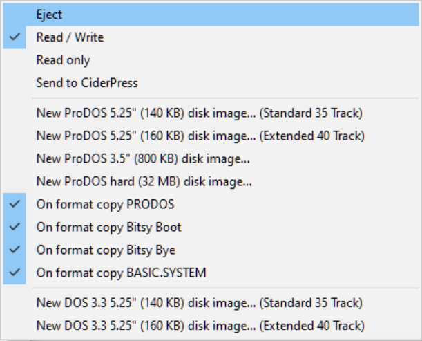

Advanced Formatting Options
Advanced Formatting Options
For finer control when formatting disks hold down the SHIFT key and right-click on the drive icon (or press SHIFT-CTRL-F3.)

Terminology
Some quick terminology to help explain the difference between Bootable Disks, Data Disks, File Systems, and Disk Operating Systems:
- A File System is the organized structure of data on a disk. It lets you name and store files on the disk.
- A Disk Operating System (ProDOS, DOS 3.3, etc.) is a bootable disk that lets you choose which applications or files to run, load, or save from disks.
- A disk formatted without a File Sysystem (or Operating System (ProDOS, DOS 3.3, Pascall, etc.) on it may be called a blank or empty disk. (It may or may not be bootable.)
- A disk formatted with a File System but no Operating System is called a data disk.
- A disk formatted with a File System and an Operating System is called a system disk.
New blank image...
When you use AppleWin's New blank disk image... to create a new blank disk it will be bootable since AppleWin provides a custom 256 byte boot sector.

To make a disk usable under AppleWin you will need to format it -- either with AppleWin or some other third party utility (see below for a list and their respective manual) -- which puts a File System on it, and optionally an Operating System on it.
To put a File System on an data disk:
- Make sure your disk it not mounted in the disk drive. If it is, right-click on the drive button and select Eject.

- Right-click on the drive button and select either:
- Format ProDOS disk image...
or
- Format DOS 3.3 disk image...

- You will see a warning depending on which OS you picked:


- You can then mount this disk and save/copy files to it.
HOWTO: Put an Operating System on new disk:
When you make a New disk image AppleWin puts a boot sector on it. You can customize the boot sector -- this can actually be any binary file, even an a bootable disk image!
Normally to put an Disk Operating System on it you would either need to a disk utility such as Copy ][+, CiderPress -- but we can take advantage of the custom boot sector and AppleWin's Select boot sector file... option to simultaneously place both a File System and Operating System on it.
To put DOS 3.3 on a blank disk:
- Make sure your disk it not mounted in the disk drive. If it is, right-click on the drive button and select Eject.
- Right-click on the drive button and select Select boot sector file...

- AppleWin will show the currect boot sector. By default it will use one built into AppleWin.

- Select Yes then select a bootable DOS 3.3 disk such as MASTER.DSK

- Right-click on the drive button and select New 5.25" disk image...

NOTE: For DOS 3.3 you MUST select a 5.25" disk since Apple DOS 3.3 does NOT suppport 3.5" or hard drives.
- Type in a name for your disk. It MUST end in .DSK or .DO.
- You can now mount and boot your new disk image.
To put ProDOS on a blank disk:
- Make sure your disk it not mounted in the disk drive. If it is, right-click on the drive button and select Eject.
- Right-click on the drive button and select Select boot sector file...
- AppleWin will show the currect boot sector. By default it will use one built into AppleWin.
- Select a bootable ProDOS disk such as ProDOS_2_4_3.po

- Right-click on the drive button and select New disk image....
NOTE: For ProDOS you can select any of the disk sizes since they are all supported by ProDOS.
- Type in a name for your disk. It MUST end in .PO or .HDV.
- You can now mount and boot your new disk image.
Sizes of new blank disk images
Here is table showing the disk sizes of the various New blank disk image...
| Option | Disk Size (KB) | Disk Size (Bytes) | Tracks |
|---|
| New blank 5.25" (140 KB) disk image... (Standard 35 Track) | 140 KB | 143,360 bytes | 35 |
| New blank 5.25" (160 KB) disk image... (Extended 40 Track) | 160 KB | 163,840 bytes | 40 |
| New blank 3.5" (800 KB) disk image... | 800 KB | 819,200 bytes | 200 |
| New blank hard (32 MB) disk image... | 32 MB | 33,554,432 bytes | 8,192 |
More Disk Utilities
There are various third-party utilities to create and modify disk images. Three popular ones are:
- CiderPress 2 (newer)
- CiderPress (older)
- Copy ][+. NOTE: Version 5.0 introduced ProDOS support but if you are modifying ProDOS disks you will want to use one of the latter versions (such as 8.x or later) since earlier verions have various ProDOS bugs in them dealing with the amount of files in a directory.